在人工智能与生命科学的交叉前沿，Boltz系列模型始终引领着AI驱动蛋白质结构与功能设计的浪潮。从初代Boltz-1实现蛋白质与RNA、小分子的多模态结构建模，到Boltz-2以扩散模型统一折叠与生成任务，该系列不断推进“AI解析生物分子结构”的愿景成真。
如今，麻省理工学院、英伟达、加州大学旧金山分校等顶尖机构联合发布了该系列的最新突破——BoltzGen。
它不仅能够预测蛋白质结构，更可从头设计能够精准结合靶点分子的全新蛋白质与多肽，真正打通了“从靶标到药物”的智能化生成路径。
BoltzGen = 结构预测 + 功能设计 + 分子生成，三位一体的AI分子设计平台。
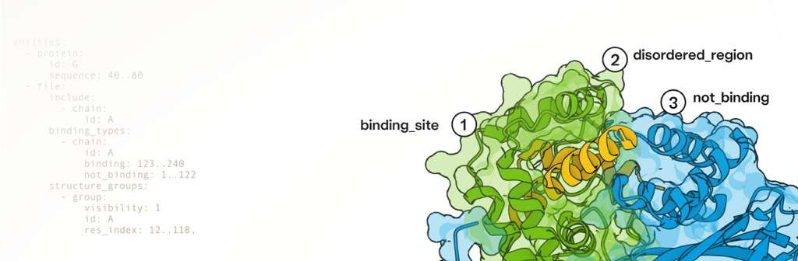
BoltzGen 是一款全原子扩散模型，直接在三维原子空间中生成新型结合分子，同步完成结构预测与功能设计。
与传统方法不同，BoltzGen 不仅预测蛋白折叠，更能主动设计出可高亲和结合指定靶点的蛋白或肽分子，实现从靶标识别到分子生成的无缝衔接。BoltzGen 对训练集中从未出现过的靶标同样展现出卓越的泛化能力。
核心创新亮点
统一化建模架构：同一模型同时执行蛋白折叠与结合体设计，无需分步处理；
几何残基编码机制：以几何关系替代传统离散氨基酸标签，支持连续空间中的扩散生成；
灵活的设计约束语言：可指定共价连接、结合位点、二级结构等条件，实现可控生成；
自动化筛选与评估系统：整合氢键、疏水性、溶解性等物化指标，自动优选高质量候选分子。
一句话概括：输入靶点结构 + 设计需求，BoltzGen 几小时内生成成百上千个候选分子，自动完成过滤、排序与去冗余！
研究团队联合多个实验室，在26个不同靶点上开展了8类湿实验验证，涵盖纳米抗体、蛋白设计、环肽及抗菌肽等多个方向，成果显著。
2.1 纳米抗体与全蛋白设计
方法：每靶点生成6万种设计，实验测试≤15个
重点：PDB 中无 >30% 同源结合结构的 9 个“新型靶点”
结果：纳米抗体与全蛋白均实现66%靶点获得nM级亲和力（SPR/BLI验证）
意义：极少量测试即可获得治疗级亲和力分子
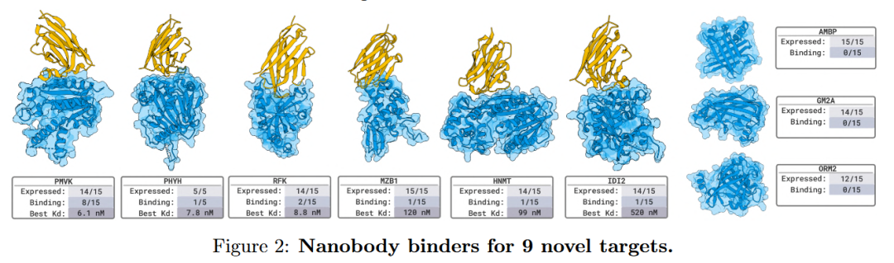
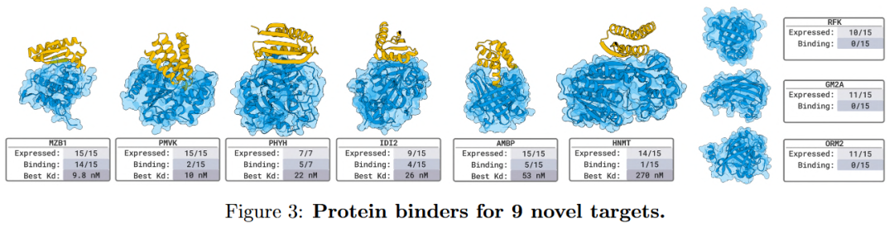
2.2 活性肽毒性中和
靶点：protegrin（β发夹）、melittin（膜诱导螺旋）、indolicidin（PPII）
结果：测试6个/靶点，获得2个nM级、1个µM级结合体，全部成功中和毒性
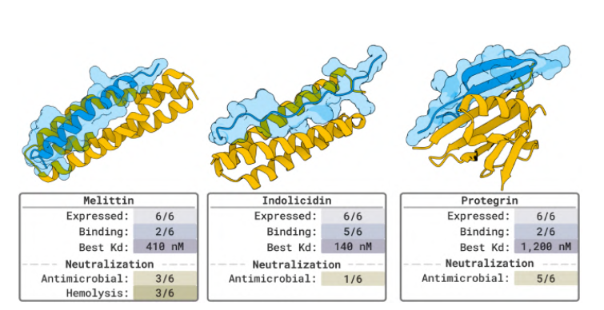
2.3 白血病相关无序区靶向
任务：生成2万条肽（40-80残基）靶向NPM1无序区（AML驱动蛋白）
突破：5个测试分子中，1个在活细胞中实现核仁定位（GFP标记）
价值：首次实现de novo设计在活细胞中结合无序蛋白
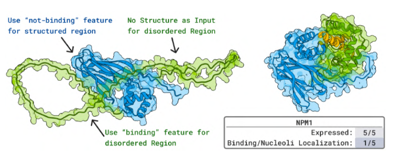
2.4 线性肽与环肽抑制剂
线性肽：RagC 生成1万设计，测试29个，7个结合，最强3.5 µM
环肽：RagA:RagC 生成5万二硫键环肽设计，测试24个，14个结合，最强80 µM
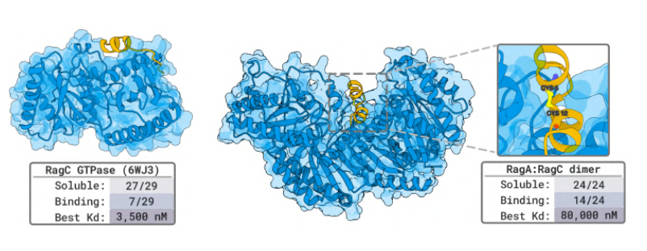
在针对RagA:RagC通路的抑制实验中，24个设计环肽中有14个能显著干扰GTPase复合体活性；圆二色谱与质谱分析证实部分环肽具有正确的空间折叠。
2.5 纳米抗体靶向病毒蛋白
靶点：Penguinpox、Hemagglutinin新病毒蛋白
结果：每靶点测试7个设计，全部显示结合活性（≤2 µM）
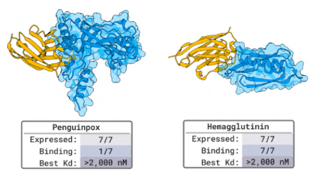
2.6 小分子结合蛋白
靶点：rucaparib、rhodamine
结果：测试4-6个设计，获得30-250 µM亲和力
备注：通用模型在此挑战性任务上表现已超预期
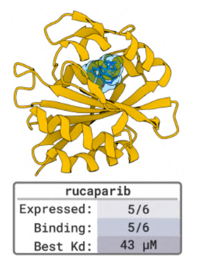
2.7 抗菌肽设计
靶点：GyrA自相互作用
结果：19.5%设计体抑制细菌生长>4倍
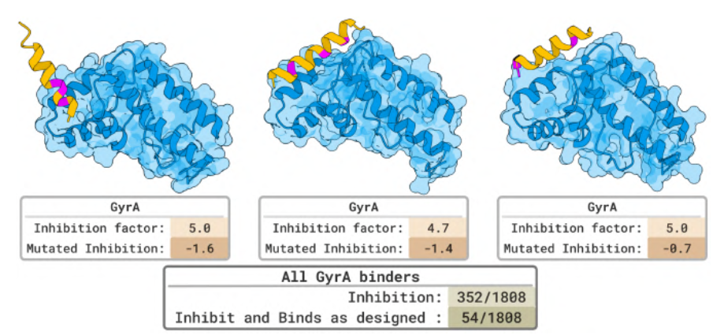
2.8 基准靶点验证
靶点：PD-L1, TNFα, PDGFR, IL-7Rα, InsulinR，这些靶点在先前的研究中已有涉及，且其已知结合剂已被广泛纳入包括本模型在内的多数训练数据中。
结果：80%获得nM级结合
数据量：每靶点≤20个蛋白/≤15个纳米抗体
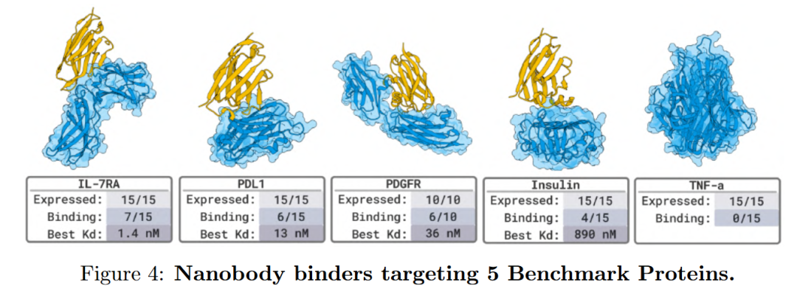
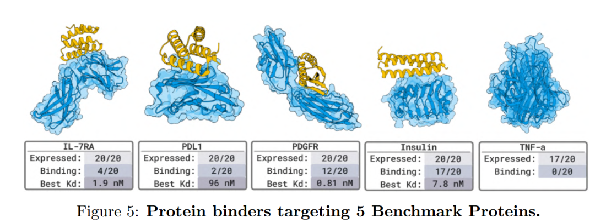
这些系统验证表明，BoltzGen在各类挑战性设计任务中均能保持高成功率，其“生成即有效”的特性显著加速了功能性分子的发现流程。尤为引人注目的是，BoltzGen 对训练集中从未出现过的靶标同样展现出卓越的泛化能力，标志着其已具备支持 “从零开始”（de novo）药物设计 的实用潜力。
BoltzGen 是首个统一结构预测与分子设计的生成式AI模型。它能够针对任意给定的靶点（包括蛋白质、RNA、小分子等），从头设计全新的蛋白质或多肽结合体，并自动筛选出高潜力候选分子。
这意味着，研究人员仅需输入目标分子的结构，BoltzGen 即可进行智能“头脑风暴”，批量生成大量可能有效的设计方案，其中甚至包含自然界中从未被发现过的全新分子结构。
核心工作流程遵循一个清晰的四步闭环：输入靶点与约束 → 扩散生成复合物 → 结构折叠验证 → 过滤与排名 → 输出最终设计。
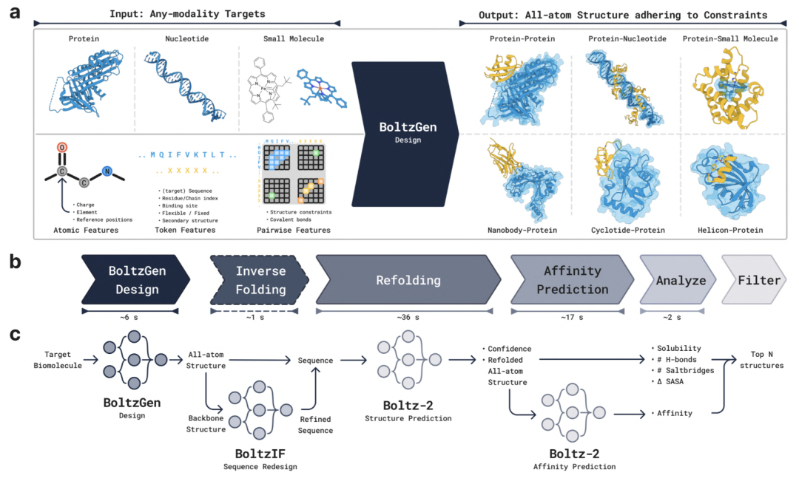
BoltzGen 的技术核心是一个全原子扩散生成架构，它有机地融合了几何深度学习、Transformer注意力机制与可控生成接口。
其系统运作可从三个层面深入理解：
3.1.1 几何编码：从“符号”到“形状”的范式转变
传统AI模型将氨基酸视为离散的标签符号（如A, G, L），而BoltzGen实现了根本性变革：它将每个残基表示为由14个关键原子构成的三维几何实体——包含4个主链原子（N、Cα、C、O）和最多10个关键侧链原子。
这种编码方式使得模型不再直接预测氨基酸类型，而是通过精确排布原子坐标来“暗示”残基身份。例如，当模型在主链氮原子附近特定位置生成三个虚拟原子时，即自然地定义了一个苏氨酸（Thr）。
这一几何式编码使模型能够在连续的三维空间中学习物理规律，而非机械记忆符号，从而实现了真正的结构物理感知。
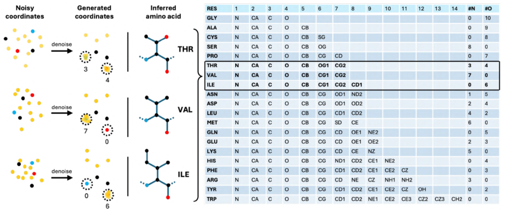
3.1.2 扩散生成：从噪声中“创造”结构
BoltzGen采用扩散模型思想，其生成过程始于一个充满随机噪声的三维空间。模型通过逐步去噪，迭代地将无序的原子云优化为符合物理与化学规律的精确三维结构。在此过程中，模型内化了对于“何为稳定、合理分子结构”的深刻理解。
该过程由改进的 EDM Sampler 驱动，能在数百次迭代中精准平衡多样性（探索性）与可开发性（实用性）。用户可通过调节初始噪声强度来鼓励“创新”，或通过强化结构约束来获得更“稳定”的设计。
3.1.3 模型结构：双模块协同的精密引擎
BoltzGen的架构包含两个核心模块，协同完成设计任务：
Trunk（主干）模块：作为系统的“理解单元”，它负责一次性深度编码输入的生物分子结构，利用集成三角注意力与多尺度表示的PairFormer，精确提取蛋白质、RNA、小分子间复杂的空间关系。
Diffusion Module（扩散模块）：作为系统的“创造单元”，它基于Transformer架构并集成多层原子级注意力机制，承担在三维空间中从噪声逐步生成全新原子坐标的任务。该模块会进行数百次循环迭代，最终精修出完整的结合体结构。
整个生成过程是高度可控的。研究人员可通过一套灵活的“设计语言”精准引导生成方向，主要控制维度包括：
共价键约束（如指定环肽中的二硫键）
结合位点指定（精确限定相互作用界面）
二级结构控制（引导生成α螺旋或β折叠等元件）
结构模板固定（用于结构补全或特定模体搭建）
这种强大的模块化架构与精细的条件控制能力相结合，共同奠定了从环肽到纳米抗体等多种功能分子实现定向设计的坚实基础。
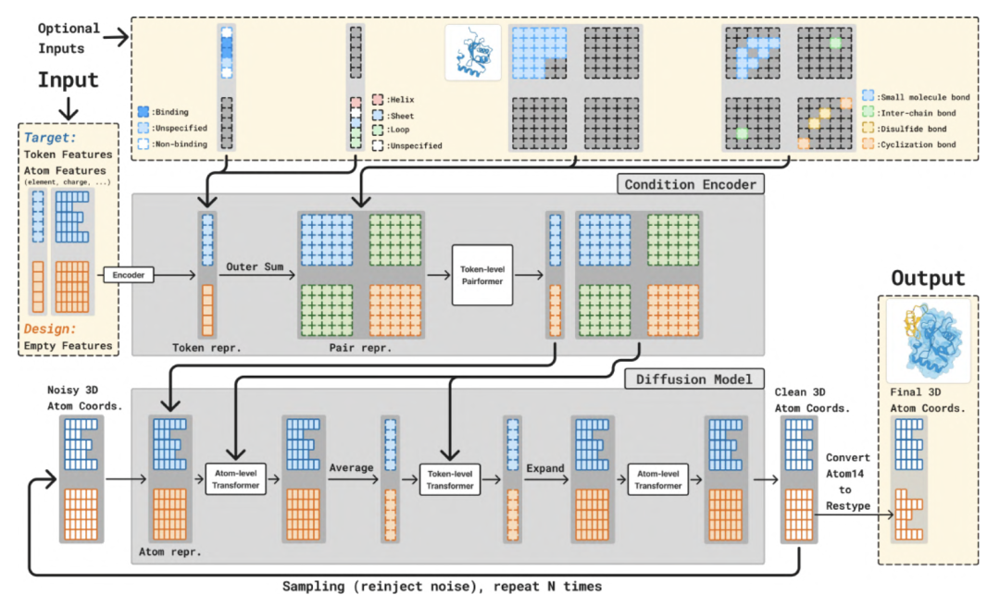
3.2 训练（Training）
BoltzGen 采用多任务联合训练框架，同步学习结构预测与结合体生成两大核心任务。模型训练数据主要来源于PDB实验结构库与AFDB计算结构库，并融合了Boltz系列自有的多模态生物分子数据（涵盖蛋白质、RNA及小分子）。
在训练过程中，模型随机接受不同任务类型的训练样本：
Folding：仅根据序列预测已知的三维结构。
Binder / Motif Design：在指定的目标链或相互作用界面生成全新的功能性残基。
Unconditional Design：执行全序列与结构的自由生成。
为提升泛化能力，每个训练样本均会进行随机裁剪（长度512–768残基），并施以多样化的条件控制，如结合位点、结构模板或二级结构标签等。
模型的整体损失函数由三部分加权构成：
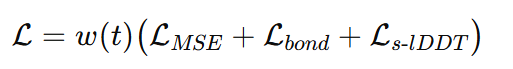
损失函数由以下三部分构成：
LMSE：加权的坐标均方误差，包含刚性配准以优化整体结构；
Lbond：约束化学键长的几何一致性，确保生成结构的化学合理性；
Ls-lDDT：平滑的lDDT近似函数，用于直接优化原子级别的结构精度。
3.3 生成（Generation）
在推理阶段，BoltzGen采用基于EDM的采样流程，从高斯噪声出发，逐步生成全原子三维结构。模型通过去噪网络预测无噪声结构，并依次迭代优化得到最终构象。
模型输出的原子坐标只是初筛；作者还在管线上加入：逆折叠（BoltzIF，用于生成更有表达性与可溶序列）、重折叠验证（用 Boltz-2 或类似折叠模块检验设计是否可重构）、物理交互指标计算（氢键、盐桥、埋表面积、疏水斑块等），以及基于“最差加权排名 + 质量-多样性贪心选取”的筛选策略，最终得到一组既高质量又多样化的候选用于湿实验验证。
四、计算实验结果
我们对 BoltzGen 进行了系统性的性能评估，涵盖结构预测精度、生成质量、物理合理性及实验验证可行性等多个维度。
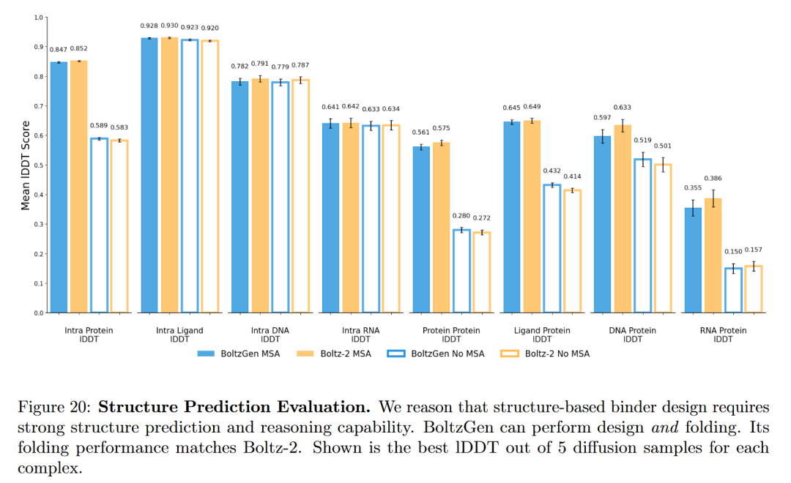
为验证模型是否真正“依赖目标”进行设计（而非生成与靶点无关的重复骨架），作者从每个靶点的生成结果中选取一条设计序列，使用Boltz-2进行重折叠，保留与原始生成结构RMSD ≤ 2.5 Å的成功案例，并通过基于TM-score相似性核的Vendi分数评估成功设计集的多样性。
结果显示，与RFdiffusion/RFdiffusionAA相比，BoltzGen在该指标下表现出更强的“目标注意”特性——即能够生成更多样化且高度依赖靶点结构的解决方案。
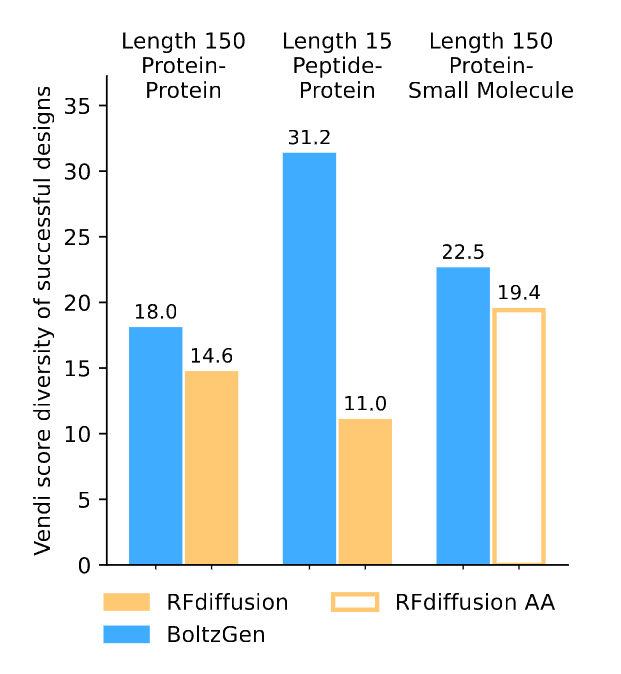
尽管BoltzGen在结构预测与结合体生成方面展现出卓越性能，本研究仍客观识别了其存在的若干局限性，并为未来研究指明了改进方向。
模型在一定程度上仍依赖于来自PDB及Boltz系列蒸馏数据库的结构模板。由于训练数据中不同结构和相互作用的出现频率存在显著差异——例如泛素、抗体Fv片段等常见结构域的出现频率远高于RNA或小分子复合物等罕见模态——这种数据分布的不均衡可能导致模型在少数模态上的泛化能力受限。
在计算实验中观察到，BoltzGen在训练集中高频出现的特定长度区间（如73–76个氨基酸）倾向于生成与原始样本高度相似的序列与空间结构。这种“结构记忆化”现象表明，模型在某些情况下仍会复现训练数据中的既有模式，而非实现完全意义上的“从头设计”。未来将通过数据去重、权重重采样或引入结构正则化等策略来缓解此问题。
尽管BoltzGen集成了自动化筛选流程与BoltzIF逆折叠模块，但其早期版本（v0）的排序结果接近随机，反映出该流程对评分函数高度敏感。尽管通过引入“最坏加权排名+质量-多样性贪心选择”策略后效果显著改善，但开发更稳定、可解释性更强的评分标准仍是未来的重点。
当前模型主要通过键长约束与平滑lDDT损失项来保证结构合理性，尚未显式整合电荷分布、能量最小化或分子动力学等物理原理。因此，在部分生成任务中仍可能出现局部键角异常或原子碰撞等问题，需借助后处理优化或与分子力场耦合进行修正。
作为全原子级别的扩散模型，BoltzGen在推理与训练阶段均对计算资源有较高要求。论文中特别指出，有187个复合体结构因显存限制而未能完成评估，这在一定程度上制约了模型在超大复合体上的应用。
尽管存在上述局限，BoltzGen首次在统一框架中实现了结构预测与功能设计的融合，能够针对多类靶点生成全原子级别的高亲和力结合体。实验结果表明，AI不仅能够“理解”生物结构，更已具备“创造”符合生化物性新分子的能力。
作者指出，BoltzGen标志着生成式AI在分子设计领域的重要转折：
建立了可扩展的跨模态生成架构；
通过开源与湿实验验证，构建了从算法到应用的完整闭环；
为融合物理仿真、能量约束与高效推理的下一代模型奠定了基础。
BoltzGen推动分子设计从“结构预测”迈入“功能创造”新阶段，为通用AI药物研发开辟了全新路径。
基于以上全面的技术解析与实验验证，我们不难发现：BoltzGen正在重新定义AI驱动分子设计的边界。
从 Boltz-1 的多模态建模，到 Boltz-2 的扩散统一，再到 BoltzGen 的“设计即折叠、折叠即稳定”。BoltzGen不仅证明了AI“理解生命语言”的能力，更展现了其“编写生命代码”的潜力。66%的全新靶点成功率、八类湿实验的交叉验证，标志着生成式AI已从算法创新走向实验可重复、功能可验证的新阶段。
这不仅是技术的突破，更是研究范式的革新——当研究者只需输入靶点结构，就能在数小时内获得成百上千个经智能筛选的候选分子，药物发现的效率与可能性将被彻底重塑。
未来已来。随着BoltzGen代码的开源与算法的持续迭代，我们有理由相信：
更多难成药靶点将被攻克
个性化疗法设计将加速实现
AI将成为每一个生物实验室的“虚拟首席科学家”
让我们共同期待，在这个AI与生命科学交汇的奇点上，BoltzGen将如何引领我们走向一个疾病可设计性治愈的新时代。
完整开源：https://github.com/HannesStark/boltzgen